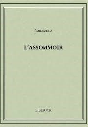
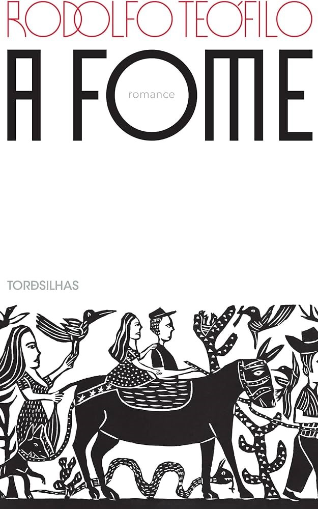

Realismo, Naturalismo e Parnasianismo
Linha do Tempo
Realismo 1857 – 1922 (Século 19)
O Realismo surge na França como resposta ao sentimentalismo exacerbado do Romantismo, e mergulha em uma crítica contra a sociedade burguesa. Na época, a Segunda Revolução Industrial estava no auge e o capitalismo estava em acelerada expansão. O mundo romântico é substituído pelo desencanto e pela crença no material e no racional. No Realismo o mais forte e a prosa, as contradições sociais são retratadas e há valorização de uma narrativa lenta, que acompanha o tempo psicológico, linguagem culta e direta e descrições objetivas. O Realismo no Brasil teve como marco inicial a publicação do livro “Memórias Póstumas de Brás Cubas”, de Machado de Assis. Assim como ocorreu na Europa, o Realismo chegou ao Brasil como uma forma de contrapor o Romantismo. Tem como característica: a objetividade, a contenção das emoções, a correção e clareza de linguagem, a impessoalidade do narrador e narrativa lenta.
Características Históricas
- O Realismo, surgido no século XIX, foi uma reação ao Romantismo e refletiu o contexto de mudanças sociais e econômicas, como a Revolução Industrial e a ascensão da burguesia.
- Influenciado pelo positivismo e pelo desenvolvimento científico, o movimento priorizou a objetividade, o retrato fiel da vida cotidiana e a crítica social.
- Abordando personagens comuns e temas como injustiças sociais e hipocrisia, o Realismo rejeitava idealizações românticas, propondo uma visão mais racional e pragmática da realidade.
- Grandes nomes do Realismo incluem Gustave Flaubert, Liev Tolstói e Machado de Assis.
Características Linguísticas
- Objetividade e Clareza: Uso de uma linguagem clara e descritiva para representar a realidade com precisão, evitando exageros emocionais.
- Formalidade e Rigor: Linguagem formal e frases bem estruturadas, com detalhamento minucioso de cenários e personagens.
- Diálogos Realistas: Reproduz fielmente a linguagem falada, incluindo regionalismos e gírias, para aumentar a autenticidade.
- Impersonabilidade: Narrador impessoal e distante, evitando expressar emoções e opiniões pessoais.
- Terminologia Científica e Técnica: Uso de termos precisos e técnicos, especialmente no Naturalismo, para aumentar a autenticidade.
- Análise Social e Psicológica: Linguagem usada para explorar e criticar aspectos sociais e psicológicos dos personagens e da sociedade.
Linha do Tempo
1857
"Madame Bovary" por Gustave Flaubert é considerada uma das obras fundadoras do Realismo, retrata a vida de uma mulher insatisfeita com seu casamento e a monotonia da vida provinciana.
1867
"O Crime do Padre Amaro" por Eça de Queirós: Um dos primeiros romances realistas em Portugal, criticando a hipocrisia e a corrupção dentro da Igreja Católica.
1875
"O Primo Basílio" por Eça de Queirós: Outra obra importante do Realismo português, que critica a sociedade lisboeta da época, abordando temas como adultério e hipocrisia social.
1881
"Memórias Póstumas de Brás Cubas" por Machado de Assis: Considerada a obra que inaugura o Realismo no Brasil, marcada por uma narrativa inovadora e crítica à sociedade da época.
1911
"O Alienista" por Machado de Assis: Embora tenha sido originalmente publicado em 1882 como parte de "Papéis Avulsos", a obra ganha notoriedade como uma das grandes expressões do Realismo psicológico de Machado.
1922
Semana de Arte Moderna em São Paulo: Marca o início do Modernismo no Brasil, simbolizando o fim da hegemonia do Realismo e Naturalismo na literatura e nas artes em geral.
Naturalismo 1881 – 1922 (Século 19)
O Naturalismo se desenvolveu sujeito à influência das teorias científicas que dominavam o cenário europeu a partir da segunda metade do século 19, como Evolucionismo, de Charles Darwin, o Positivismo, de Auguste Comte. No Naturalismo se destaca o romance, no qual o narrador trabalha como um cientista, observando fenômenos sociais e os descrevendo. O comportamento humano aparece dependente do ambiente social e não há mais a subjetividade valorizada pelo romantismo. O narrador observador discute nas obras temas como miséria, sexualidade, violência e política. A Europa do século XIX vivenciava profundas transformações econômicas, políticas e sociais, proporcionadas por dois grandes eventos do século XVIII: a Revolução Industrial e a Revolução Francesa. Com a industrialização, surgiam os primeiros centros urbanos e a nova ordem econômica do capitalismo financeiro, dividindo a sociedade entre burguesia, a nova classe dominante após o fim do Antigo Regime, e proletariado, classe dos trabalhadores assalariados, que operavam o maquinário industrial. A burguesia consolidava-se no poder, o que propiciava o movimento da Segunda Revolução Industrial, que levaria à exploração do aço, do petróleo e da eletricidade. O entusiasmo das novas invenções e descobertas levava o cientificismo, em voga desde o século XVII, ao seu ápice: o método das ciências naturais era tido como a principal maneira de compreender a realidade.
Características Históricas
- O Naturalismo, emergido no final do século XIX, é caracterizado por:
- Influência Científica: Baseado no positivismo de Auguste Comte e nas teorias evolucionistas de Charles Darwin, focando no determinismo biológico e social.
- Revolução Industrial: Retrata as condições precárias da vida urbana e a exploração dos trabalhadores, refletindo os impactos da industrialização.
- Determinismo: Enfatiza que o comportamento humano é moldado por fatores genéticos e sociais, abordando aspectos patológicos e comportamentais com uma abordagem científica.
- Crítica Social: Mantém a crítica do Realismo, mas com um retrato mais cru e detalhado das injustiças e desigualdades sociais.
- Rejeição ao Romantismo: Se opõe ao idealismo e sentimentalismo do Romantismo, apresentando a vida de forma objetiva e sem idealizações.
Características Linguísticas
- As características linguísticas do Naturalismo incluem:
- Precisão e Detalhamento: Linguagem rica em detalhes e terminologia técnica para descrever ambientes e condições com exatidão.
- Objetividade e Clareza: Uso de uma linguagem neutra e impessoal, focada na clareza e na precisão, evitando subjetividade e emoção.
- Realismo Cru: Descrição direta e crua da realidade, abordando aspectos negativos e ambientes degradados.
- Diálogos Autênticos: Representação fiel da fala cotidiana, incluindo regionalismos e gírias para refletir diferentes classes sociais.
- Análise Científica: Linguagem usada para descrever e analisar o comportamento dos personagens de forma científica, destacando fatores biológicos e sociais.
Linha do Tempo
1881
"O Mulato" por Aluísio Azevedo: Considerada a obra inaugural do Naturalismo no Brasil, aborda temas como racismo, preconceito e injustiças sociais, com uma visão determinista e crítica.

"Assommoir" por Émile Zola: Um dos romances mais importantes do Naturalismo francês, retrata a degradação de uma família operária em Paris devido ao alcoolismo e à pobreza.
1884
"A Carne" por Júlio Ribeiro: Uma das obras mais controversas do Naturalismo brasileiro, trata abertamente de temas como sexualidade, desejo e a influência da biologia sobre o comportamento humano.
1887
"Germinal" por Émile Zola: Este romance naturalista é um dos mais célebres de Zola, explorando a vida dura dos mineiros de carvão na França e as condições que levam à revolta operária.
1890
"O Cortiço" por Aluísio Azevedo: Um dos maiores expoentes do Naturalismo no Brasil, a obra faz uma análise detalhada da vida numa habitação coletiva, mostrando a degradação moral e social dos personagens.

"A Fome" por Rodolfo Teófilo: Um romance naturalista que aborda a questão da seca no Nordeste brasileiro e suas consequências devastadoras sobre a população.
1899
"Casa de Pensão" por Aluísio Azevedo: Mais uma obra importante do Naturalismo brasileiro, que aborda a vida em uma pensão no Rio de Janeiro, explorando temas como adultério, ambição e a influência corruptora do meio.
1904
"O Livro de Cesário Verde" por Cesário Verde: Um marco do Naturalismo poético em Portugal, explorando temas urbanos e a influência do meio sobre a psicologia dos indivíduos.
1922
Semana de Arte Moderna em São Paulo: O evento marca o início do Modernismo no Brasil, simbolizando o declínio do Naturalismo como movimento dominante, embora suas influências ainda persistam na literatura brasileira.
Parnasianismo 1882 – 1922 (Século 19)
Ao contrário do que acontece com o Realismo, que teve poucos poetas em seu movimento, mas foi rico em romancistas, no Parnasianismo ganha destaque a poesia. Esse movimento é também mais uma reação ao sentimentalismo idealizante do romantismo. Assim, há valorização do cuidado formal e a expressão moderada dos sentimentos com um vocabulário elaborado, culto e, muitas vezes, pouco compreensível. Há ainda racionalismo e temática voltada para assuntos universais. Ao contrário dque ocorre com o Realismo, os poetas parnasianistas não tratavam temas sociais, mas o culto da arte pela arte, ou seja, a poesia deveria valer por si mesma, por sua beleza, sem compromisso social. Em 1882, Fanfarras, de Teófilo Dias, é a obra que inaugura o parnasianismo brasileiro, movimento que se prolonga até a Semana de Arte Moderna, em 1922. Tem como característica: Idealização da arte pela arte, busca da perfeição formal, preferência pelo soneto, preferência pela descrição, vocabulário culto, objetivismo, racionalismo, universalismo, apego à tradição clássica e gosto pela mitologia greco-latina.
Características Históricas
- O Parnasianismo, surgido no final do século XIX, é caracterizado por:
- Reação ao Romantismo: Rejeita o subjetivismo e a idealização emocional do Romantismo, focando na objetividade e na técnica.
- Influência Clássica: Valoriza a estética e os modelos da Antiguidade Clássica, buscando perfeição formal.
- Valorização da Forma: Enfatiza a técnica poética, com rigor na métrica, rima e construção dos versos, defendendo o princípio de "arte pela arte".
- Contexto Histórico: Desenvolve-se durante a Segunda Revolução Industrial e um período de estabilidade política, permitindo foco na estética.
- Impersonalidade: Evita a expressão pessoal e emocional, focando na perfeição técnica e temas clássicos.
- Principais autores incluem Olavo Bilac, Alberto de Oliveira e Raimundo Correia.
Características Linguísticas
- As características linguísticas do Parnasianismo incluem:
- Precisão e Rigor Formal: Uso rigoroso da métrica e da rima, com frases elaboradas e sintaxe complexa.
- Objetividade e Impessoalidade: Linguagem impessoal e objetiva, evitando a expressão emocional direta e o subjetivismo.
- Vocabulário Erudito: Uso de termos refinados e referências clássicas, enriquecendo o texto com uma dimensão erudita.
- Estética e Beleza Formal: Foco na perfeição estética e técnica, com atenção detalhada à forma e à apresentação do poema.
- Temas Clássicos: Predileção por temas da mitologia, história e arte clássicas, evitando assuntos contemporâneos e sociais.
Linha do Tempo
1882
"Fanfarras" por Teófilo Dias: Considerada uma das primeiras manifestações do Parnasianismo no Brasil, esta coletânea de poemas reflete a busca pela perfeição formal e pela valorização da arte pela arte.
1898
"Tarde" por Olavo Bilac: Um poema que exemplifica a melancolia e o refinamento estético do Parnasianismo, ao mesmo tempo em que explora a beleza do crepúsculo como metáfora para o fim da vida.
1910
"Pan" por Olavo Bilac: Uma das últimas grandes obras parnasianas no Brasil, "Pan" reflete a exaltação da beleza e a busca pela perfeição formal, características centrais do movimento.
1912
Morte de Olavo Bilac: A morte do maior poeta parnasiano brasileiro marca o início do declínio do movimento no país, que aos poucos seria substituído pelo Simbolismo e pelo Modernismo.
1922
Semana de Arte Moderna em São Paulo: Este evento marca o fim do Parnasianismo como movimento dominante na literatura brasileira. A Semana de Arte Moderna introduz o Modernismo, que propõe uma ruptura com a rigidez formal e o classicismo do Parnasianismo, em busca de novas formas de expressão artística.